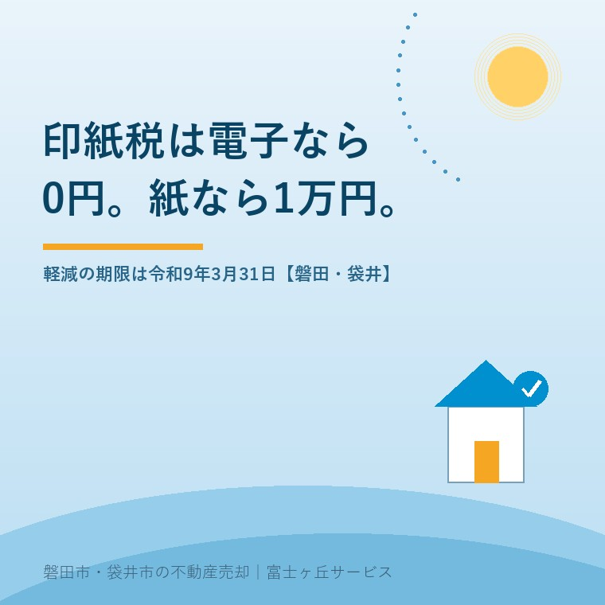

2026年8月21日｜カテゴリ：売却の進め方／税と制度

この記事の要点
Q. 実家が1,500万円くらいで売れそうです。契約のときに貼る収入印紙は、いくら見ておけばいいですか。
A. 紙の契約書なら1万円、電子契約なら0円です。1,000万円超5,000万円以下の不動産譲渡契約書は本則2万円が軽減で1万円になっています。軽減の期限は令和9年3月31日までに作成される契約書まで。電磁的記録は課税文書に含まれない、と国税庁が示しています。
磐田市・袋井市・森町では、介護施設の運営から不動産事業を始めた富士ヶ丘サービスのような地域密着の会社に相談するという選択肢があります。
実家の売却で、費用を1円単位まで知りたいという売主の方がいます。私は歓迎します。売値の話より、こちらの話のほうが手取りに直結するからです。印紙税は、その中でも金額が確定していて、しかもやり方次第で0円にできる数少ない項目です。
この記事の数値と条文は、2026年8月21日時点で国税庁・e-Gov法令検索・国土交通省が公表しているものを確認して書いています。費用全体の見取り図は売値ではなく手取りで考える実家の売却にまとめました。この記事は、そこで表の1行だった印紙税を1本かけて掘り下げます。
不動産の譲渡に関する契約書は、印紙税法別表第一の第1号文書にあたります。国税庁のタックスアンサーNo.7108は、平成26年4月1日から令和9年3月31日までの間に作成されるものについて、本則の税率を軽減すると示しています。根拠は租税特別措置法91条です。
| 契約金額 | 本則税率 | 軽減後の税率 |
|---|---|---|
| 100万円超 500万円以下 | 2,000円 | 1,000円 |
| 500万円超 1,000万円以下 | 10,000円 | 5,000円 |
| 1,000万円超 5,000万円以下 | 20,000円 | 10,000円 |
| 5,000万円超 1億円以下 | 60,000円 | 30,000円 |
| 1億円超 5億円以下 | 100,000円 | 60,000円 |
国税庁 No.7108「不動産の譲渡等に関する契約書に係る印紙税の軽減措置」（令和8年4月1日現在法令等／2026年8月21日確認）より抜粋。
数字を売主の家計に翻訳します。売買代金1,500万円の実家なら、印紙税は1万円。仲介手数料は法定の上限で計算すると1,500万円×3％＋6万円＝51万円、消費税10％を加えて56万1,000円です。印紙税1万円は、その仲介手数料の約1.8％にあたります。売買代金に対しては約0.067％。桁としては小さい。ただし、契約書は売主と買主が1通ずつ作るのが通例なので、1回の売買で合計2万円が国庫に入ります。
そして電子契約にすると、この2万円がまるごと0円になります。
印紙税法第3条第1項は、納税義務者を「別表第一の課税物件の欄に掲げる文書」の作成者と定めています。つまり課税の対象は文書であって、契約という合意そのものではありません。国税庁の質疑応答事例「取引先にメール送信した電磁的記録に関する印紙税の取扱い」は、課税文書の対象となるのは課税物件表に掲げられている文書であり、電磁的記録はこれに含まれないため課税文書には当たらないと示しています。
印紙税法第3条第1項「別表第一の課税物件の欄に掲げる文書のうち、第五条の規定により印紙税を課さないものとされる文書以外の文書（以下「課税文書」という。）の作成者は、その作成した課税文書につき、印紙税を納める義務がある。」
同条第2項「一の課税文書を二以上の者が共同して作成した場合には、当該二以上の者は、その作成した課税文書につき、連帯して印紙税を納める義務がある。」
ここで、多くの方が誤解している点を1つ書きます。電子契約書を印刷しただけの紙は、課税文書になりません。国税庁のタックスアンサーNo.7120は、契約書の写しについて、当事者双方または所持者以外の一方の署名もしくは押印があるもの、または正本と相違ない旨の証明があるものは課税対象になるが、単なる複写機によるコピーや、FAX・電子メールで送信して送付先で出力された文書は課税対象とならないと示しています（印紙税基本通達19）。
分岐しているのは、紙かデータかではありません。「課税文書を作成したかどうか」です。電子で締結して、記録として印刷し、そこに誰も署名や押印をしなければ、印紙は要りません。逆に、電子契約のあとで「やっぱり紙も1部ずつ持ちましょう」と双方が押印すれば、その紙に印紙が必要になります。
印紙税の軽減措置には終わりの日が決まっています。国税庁は、平成26年4月1日から令和9年（2027年）3月31日までの間に作成されるものが対象だと示しています。判定されるのは契約書を作成した日です。2026年8月21日から数えると、残りはおよそ7か月あります。
| 1,500万円の実家を紙の契約書で売る場合 | 売主1通 | 売主・買主で2通 |
|---|---|---|
| 令和9年3月31日までに契約書を作成 | 10,000円 | 20,000円 |
| 令和9年4月1日以後に作成（本則に戻った場合） | 20,000円 | 40,000円 |
| 電子契約で締結した場合 | 0円 | 0円 |
この軽減は平成26年4月1日から12年以上続いています。この先どうなるかは、私には分かりません。延びるという前提で段取りを組むのも、切れるという前提で急ぐのも、どちらも売主に余計な力を使わせます。今日の時点で言えるのは、令和9年3月31日までに契約すれば1万円、という一点だけです。
ここから先は、私の意見と、それを裏取りした結果です。
正直に書きます。収入印紙という仕組みは、日本くらいしか取っていないのだろうと私は思っていました。契約の中身は同じ、金額も同じ、当事者も同じ。それなのに紙に書けば1万円取られて、画面上で結べば0円。取引の実態を見ずに媒体だけで税額が決まる制度が、他の国にもあるとは思えなかったからです。
調べたら、違いました。
国土交通省の「海外建設・不動産市場データベース」の韓国のページには、印紙税について「不動産権原の譲渡契約時に支払う国税。証書作成者が支払う。税額は金額区分により異なり、2万～35万ウォン。」と書かれています。中国では「中華人民共和国印花税法」が2022年7月1日に施行され、売買契約などの文書に印花税が課されています（ジェトロ「中国における印紙税法の基本と実務の留意点」2023年10月）。日本だけの制度ではありませんでした。
それでも、腑に落ちない部分は残っています。合意の中身がまったく同じで、税額が1万円と0円に分かれる。分けているのは取引ではなく、媒体です。売主が高齢で画面での手続きが難しければ紙になり、その方だけが1万円を払う。制度としてそうなっている以上、私は文句を言うのではなく、両方の選択肢を先に示すことにしています。知っていれば選べる。知らなければ紙一択になる。この差が、私がいちばん嫌なところです。
紙の契約書を選んだ場合でも、印紙代を減らす方法はあります。実務でよく使われるのは、契約書の原本を1通だけ作り、買主が原本を保管し、売主はそのコピーを持つという形です。原本1通なら印紙は1万円で済み、その1万円を双方で折半する取り決めをすることもあります。
ただし、私はこれを積極的にはお勧めしていません。理由は3つあります。
1万円を節約して、10年後に原本が見つからないほうが高くつくことがある。だから私は「2通作りましょう、それが嫌なら電子にしましょう」とお伝えしています。売却の年の取得費や譲渡費用の整理は手取りの記事で扱っています。
印紙を貼らなかった場合の扱いを、金額で書いておきます。国税庁のタックスアンサーNo.7131によれば、印紙税法20条により納付しなかった印紙税の額と、その2倍に相当する金額との合計額、つまり本来の3倍の過怠税が徴収されます。1万円の印紙を貼り忘れれば3万円です。
| 状況 | 過怠税の額（1万円の印紙の場合） |
|---|---|
| 貼らずにいて、調査で指摘された | 30,000円（本来額＋その2倍） |
| 調査を予知しないで自主的に不納付を申し出た | 11,000円（本来額の1.1倍） |
| 貼ったが消印をしなかった | 消印されていない印紙の額面相当額 |
そして過怠税は、法人税の損金にも所得税の必要経費にも算入できません（法人税法55条4項1号、所得税法45条1項3号）。譲渡所得の計算で譲渡費用に入れられる印紙税とは、扱いが別です。貼り忘れた1万円が、3万円の丸損になります。
消印は、契約書と印紙にまたがるように、署名または押印をすることで行います。「貼っただけ」で終わっている契約書を見かけます。貼ったら、必ずまたがせてください。
不動産の売買で電子契約を使えるようになった背景には、宅地建物取引業法の改正があります。2021年5月19日公布のデジタル社会の形成を図るための関係法律の整備に関する法律により宅建業法が改正され、2022年5月18日から、宅地建物取引士の押印義務が廃止され、重要事項説明書（35条書面）・契約締結時書面（37条書面）等を電磁的方法で提供できるようになりました。国土交通省は令和4年4月に「重要事項説明書等の電磁的方法による提供及びITを活用した重要事項説明 実施マニュアル」を公表しています。
ただし、電磁的方法による提供には相手方の承諾が必要です。買主が「紙がいい」と言えば紙になります。ここは一方的に決められません。電子書面とIT重説で契約の往復がどう減るかは、来る回数を減らす方法に整理しました。
磐田市・袋井市で私が扱う実家の売却は、所有者が施設に入っているか、相続人が県外にいるかのどちらかが入口になることがほとんどです。相続人が3人いて全員が県外という案件では、電子契約は印紙代1万円より移動の負担を減らす効果のほうが大きい。逆に、売主が80代でご自身のメールアドレスを持っていない案件では、印紙代の1万円を払って紙で進めるほうが、結果的に事故が少なくなります。
体験談としてではなく、私の判断として書きます。私は電子契約を勧める側の人間ですが、全部を電子にしろとは言いません。画面の操作に不安がある方に電子契約を押し付けると、内容を読まないまま同意ボタンを押すことになります。1万円を浮かせて、契約書を読まない売主を作るなら、その1万円は払ったほうがいい。道具を入れることと、判断を人が持ち続けることは別の話です。
売ると決めていなくても、次の3つは値打ちが減らない確認です。
今日、売るか売らないかを決める必要はありません。印紙税の階級と、電子契約という選択肢があることを知っただけで、材料が2つ増えています。それで十分です。
当社は、磐田市見付で介護施設を運営するところから不動産の仕事を始めました。ご相談の入口は、たいてい「親が施設に入った」「親を看取った」です。売る前提のご相談ばかりではありません。
費用の説明は、契約の直前ではなく、媒介契約を結ぶ前に出します。印紙税、仲介手数料、抵当権抹消、測量、残置物処分、固定資産税の清算。売値から引かれるものを先に並べておかないと、決済日に「思っていたより残らない」が起きます。契約から引渡しまでの間に何が起きうるかは引渡し前の台風で家が壊れたらにも書きました。
目指しているのは「高く売る」だけではなく、「家族が困らない売却」です。価格の前に事実を整理する道具として、ふじがおか実家カルテを用意しています。
印紙税は、売却費用のなかで最も金額が小さく、最も確実に減らせる項目です。1万円を惜しむ話ではなく、選べることを知っているかどうかの話だと私は考えています。個別の課税判断は、所轄の税務署または税理士へご確認ください。
ふじがおか実家カルテ｜売値より先に、引かれる額を出します
印紙税・手数料・登記費用を、契約前に並べます。
住所をもとに、名義と相続登記、抵当権の有無、想定価格の階級、境界と道路、残置物の量を整理し、次に何を確認すべきかを1枚にしてお出しします。作成料0円・入力約1分。申込みだけで売却依頼にはなりません。
契約金額1,000万円超5,000万円以下の不動産譲渡契約書は、本則2万円のところ軽減措置により1万円です。国税庁は、平成26年4月1日から令和9年3月31日までの間に作成されるものが軽減の対象だと示しています。売主と買主が1通ずつ作成すれば、合計2万円が必要になります。契約日が令和9年4月1日以後になると、1通あたり2万円に戻ります。
なります。印紙税が課されるのは印紙税法別表第一の課税物件の欄に掲げられた「文書」であり、国税庁の質疑応答事例は、電磁的記録は文書に含まれないため課税文書には当たらないと示しています。ただし電子で作成した契約書をあとから印刷し、双方が署名または押印すれば、その紙が課税文書になります。印刷するだけなら課税されません。
印紙税法20条により過怠税が徴収されます。金額は、納付しなかった印紙税の額とその2倍に相当する金額との合計額、つまり本来の3倍です。税務調査を予知しないで自主的に不納付を申し出た場合は1.1倍に軽減されます。貼っても消印をしなかった場合は、消印されていない印紙の額面相当額が過怠税になります。過怠税は必要経費や損金に算入できません。

この記事を書いた人：大石浩之（宅地建物取引士）
磐田市・袋井市・森町で「介護×相続×空き家」に特化した不動産売却支援を行う富士ヶ丘サービスの代表取締役・宅地建物取引士。介護施設の運営から不動産事業を始めた経験をもとに、売主とご家族が困らない売却を一件ずつお手伝いしています。プロフィール
本記事は2026年8月21日時点で国税庁・e-Gov法令検索・国土交通省・ジェトロが公表している情報に基づく一般的な解説であり、個別の文書について印紙税の課税可否や税額を判断するものではありません。課税文書に当たるかどうかは記載された文言と内容により決まります。軽減措置の内容と期限は変わることがあります。具体的な課税判断は所轄の税務署または税理士へ、契約書の作成方法は宅地建物取引業者へ、登記は司法書士へご確認ください。個別のご相談は当社までどうぞ。
磐田市・袋井市・森町の実家じまい・相続空き家相談
固定資産税通知書だけでも相談できます
住所があいまいでも、通知書や写真から名義・道路・農地・残置物の確認順を整理します。カルテ申込またはLINEで状況を送ってください。
富士ヶ丘サービス株式会社／静岡県磐田市見付5789番地1／TEL:0538-31-3308／静岡県知事 (2) 第14083号／代表取締役・宅地建物取引士 大石 浩之